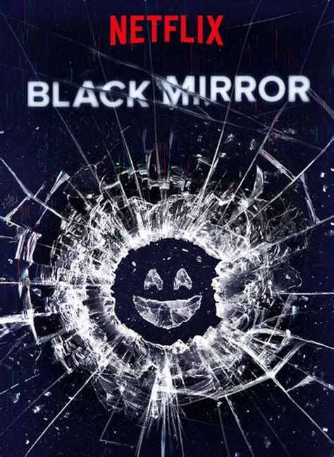

Black Mirror

Summary
Black Mirror is a British anthology science fiction series created by Charlie Brooker. Each episode explores a standalone story that examines modern society, particularly with regard to the unanticipated consequences of new technologies.
Episodes
- Season 1: 3 episodes
- Season 2: 3 episodes
- Season 3: 6 episodes
- Season 4: 6 episodes
- Season 5: 3 episodes
- Interactive Movie: Bandersnatch
Notable Episodes
- Season 1, Episode 1: "The National Anthem"
- Season 2, Episode 1: "Be Right Back"
- Season 3, Episode 1: "Nosedive"
- Season 4, Episode 1: "USS Callister"
Themes
Themes explored in Black Mirror include dystopian futures, social media, virtual reality, artificial intelligence, and the impact of technology on human behavior.